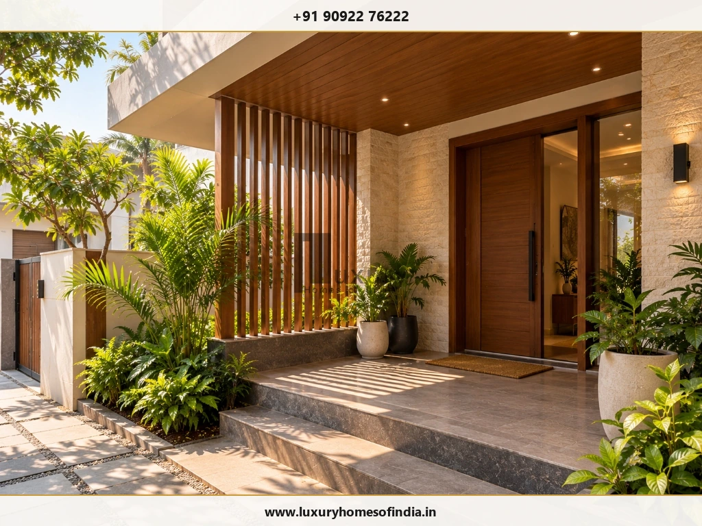
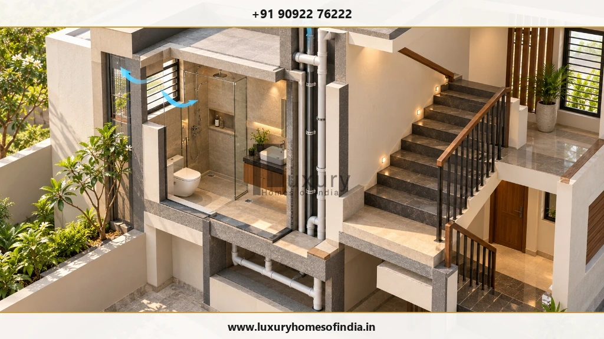
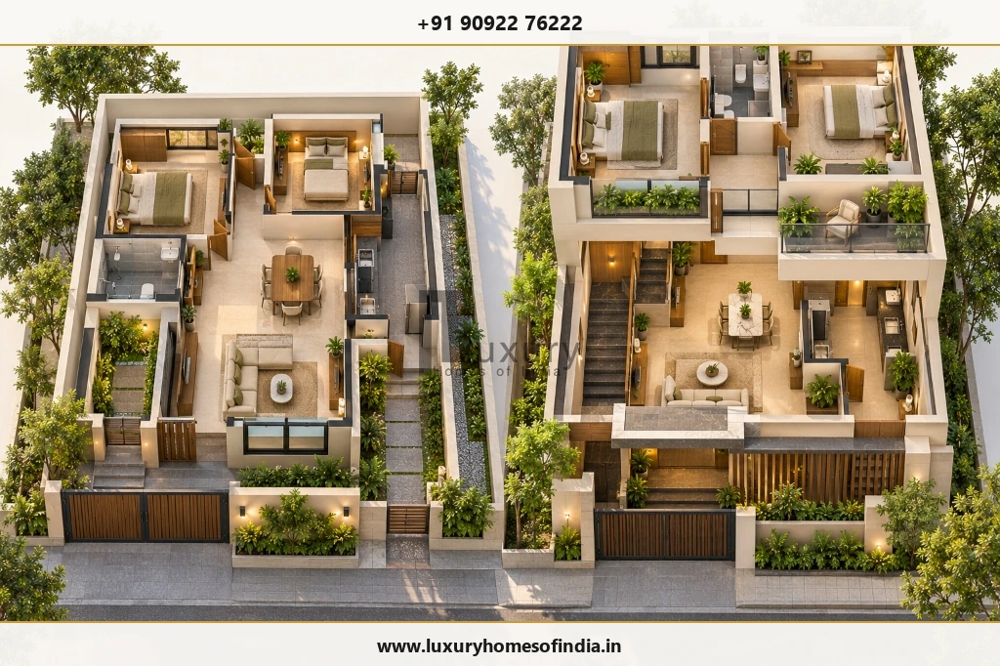
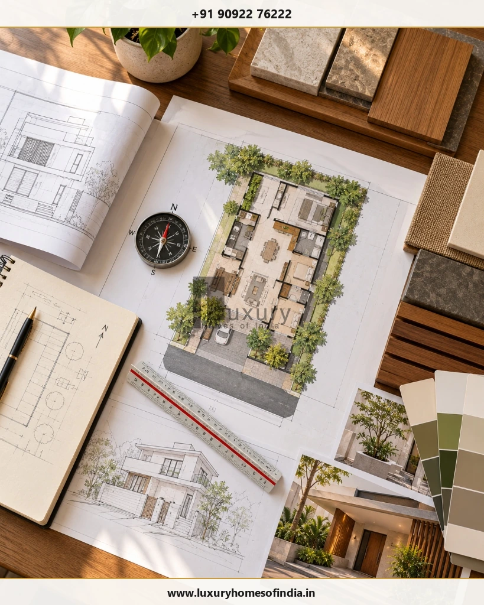

Executive Summary for Homeowners
A west-facing house plan as per Vastu combines traditional room-placement preferences with practical architectural planning. The main entrance, kitchen, master bedroom, pooja room, staircase and living areas can be arranged around the family's preferred Vastu principles, but the final layout must also work with the plot dimensions, road access, daylight, ventilation, privacy and applicable building regulations.
For homeowners planning a house in Chennai, managing afternoon sunlight and heat on the west-facing side deserves particular attention. Before selecting a floor plan, confirm the plot's orientation, identify the required rooms, establish parking and circulation needs, and check permitted setbacks and building coverage.
Vastu recommendations differ between traditions, so directional guidance should be treated as a starting point rather than a universal rule. A well-planned home balances cultural preferences with usable room sizes, safe construction, coordinated services and long-term comfort.

What Is a West-Facing House as per Vastu?
A west-facing house generally has its main entrance facing west. To check the orientation, stand at the proposed main entrance and look outward. If you face west, the entrance is west-facing.
On corner plots or properties with separate compound gates and house entrances, distinguish the road-facing boundary from the actual house entrance. Confirm both on the site drawing before planning the floor layout.
Traditional Vastu Shastra considers the direction and placement of entrances, rooms and other parts of a home. A west-facing plot is not automatically unsuitable; its suitability depends on the overall design and the preferences of the household.
Vastu is a traditional belief system, not a scientific guarantee of prosperity, health or success. Homeowners can incorporate the principles they value while maintaining safe, comfortable and regulation-compliant design.
Ideal Room Placement in a West-Facing House Plan
The table below summarises commonly followed Vastu preferences. Recommendations can differ between traditions and should be checked against the actual site.
| Room or feature | Common traditional preference | Practical design priority |
|---|---|---|
| Main entrance | West A prescribed segment of the west wall, depending on the Vastu method | Confirm orientation, entrance dimensions, access and weather protection |
| Living room | N / NW / E North, north-west or east, depending on the plan | Daylight, visitor access and clear circulation |
| Pooja room | NE North-east | A calm, accessible and maintainable space |
| Kitchen | SE / NW South-east; north-west is a commonly cited alternative | Safe cooking clearances, exhaust and service connections |
| Master bedroom | SW South-west | Privacy, comfortable dimensions and storage |
| Children's bedroom | W / NW West, north-west or another suitable zone | Daylight, ventilation and study space |
| Guest bedroom | NW North-west or another practical location | Privacy and convenient access |
| Bathroom | W / NW West or north-west are common preferences | Drainage, waterproofing and ventilation |
| Staircase | S / W / SW South, west or south-west are common preferences | Safe geometry, headroom and structural coordination |
| Open space | N / E North or east where feasible | Applicable setbacks, drainage and site planning |
Use this table to begin a discussion with your architect, not as a substitute for a measured floor plan. Plot dimensions, adjoining buildings, road access and the required room sizes can affect the final arrangement.
1. Main Door Position for a West-Facing House
The main entrance is one of the most discussed elements of a west-facing house plan as per Vastu. Some traditions recommend a specific segment, or pada, of the west wall. The recommended position depends on the method used to divide and measure the wall.
Avoid selecting the door position solely from a generic online diagram.
Before Finalising the Entrance:
- Confirm north direction and the west-facing boundary on the site plan.
- Mark the wall dimensions and proposed door position.
- Coordinate the entrance with the compound gate, porch, parking and foyer.
- Maintain convenient circulation without reducing usable room space.
- Plan weather protection, drainage and exterior lighting.

2. Living Room in a West-Facing House
North, north-west or east may be considered for the living room in a Vastu-oriented plan, depending on the preferred room arrangement and the plot.
A living room near the entrance can make visitor access convenient. However, the entrance should not unnecessarily expose private bedrooms or family areas.
For compact plots, an integrated living-and-dining arrangement may use the available footprint more efficiently.
Consider These Planning Points:
- Provide a clear route from the entrance to dining and bedroom areas.
- Coordinate seating, television placement, windows and electrical points.
- Manage daylight and glare through suitable window design.
- Avoid placing storage where it obstructs windows or circulation.
- Consider cross-ventilation and external shading based on the actual orientation.
The best location is the one that works with the complete floor plan while accommodating the household's preferred Vastu principles.
3. Pooja Room Placement as per Vastu
The north-east is commonly preferred for a pooja room in traditional Vastu planning. Where space is limited, a small dedicated prayer area or niche may be more practical than a separate room.
When Planning the Space:
- Choose a quiet, accessible location.
- Provide suitable lighting and easy-to-maintain finishes.
- Coordinate the space with doors, storage and circulation.
- Avoid obstructing windows or compromising ventilation.
- Finalise dimensions and electrical requirements before interior work.
If the preferred zone is required for another essential function, discuss alternatives with the architect rather than creating an impractical or undersized prayer room.
4. Kitchen Placement in a West-Facing House
The south-east is commonly recommended for a kitchen in Vastu-based layouts. The north-west is often cited as an alternative when the preferred position does not work with the plot.
Kitchen planning must support safe cooking, storage and efficient movement between preparation, cooking, washing and dining areas.
Kitchen Planning Checklist
- Coordinate the cooking platform, sink and refrigerator.
- Provide effective exhaust ventilation.
- Maintain safe clearances around appliances.
- Plan plumbing, electrical points and utility connections early.
- Allow adequate counter space and storage.
- Consider the household's cooking habits before finalising the layout.
Some Vastu practitioners prefer an arrangement in which the cook faces east. Test this preference against the actual kitchen dimensions, appliance positions and service locations.
5. Master Bedroom in the South-West
The south-west is a common traditional preference for the master bedroom. Depending on the plot, it may also offer a private part of the house.
Plan enough room for the bed, wardrobes, dressing space and comfortable walking clearances. Coordinate bathroom access, window placement, daylight and ventilation.
Managing Afternoon Heat on the West Elevation
A bedroom on the west side may receive afternoon solar exposure. Depending on the building and surroundings, consider:
- External shading or a covered balcony where feasible.
- Appropriate glazing and window design.
- Suitable wall and roof insulation.
- Shaded openings and effective ventilation.
- Wardrobe placement that does not block windows.
6. Children's and Guest Bedrooms
Children's bedrooms are often considered for the west or north-west in Vastu-oriented layouts. Guest bedrooms may also be placed in the north-west or another suitable zone.
For a child's room, provide space for sleeping, studying, storage and everyday activities. Plan lighting and electrical points before construction.
For a guest bedroom, consider convenient access, privacy and proximity to a bathroom where the floor plan permits.
7. Toilets, Bathrooms and Staircase Placement
West or north-west locations are commonly considered for bathrooms in many Vastu-based layouts. Staircases are often considered for the south, west or south-west.
These preferences must be coordinated with the structure, plumbing routes, drainage and movement through the house.
Bathroom Planning
- Provide effective ventilation and moisture control.
- Ensure suitable floor slopes and drainage.
- Specify appropriate waterproofing.
- Coordinate plumbing shafts between floors where practical.
- Maintain convenient access and privacy.
Staircase Planning
- Provide safe tread and riser dimensions.
- Maintain suitable headroom and handrails.
- Ensure adequate lighting and clear circulation.
- Coordinate landings and structural supports.
- Reserve space early if an upper floor is planned for the future.
Significant changes to structural elements or essential services should be reviewed by the relevant design professional.

West-Facing House Plan Ideas for Different Plot Sizes
These examples are conceptual planning starting points, not approved floor plans. Land area is not the same as permitted built-up area. Actual feasibility depends on setbacks, permitted coverage, parking, room sizes, access, services and applicable regulations.
West-facing house plan for a 20 × 40 ft plot
A 20 × 40 ft plot has a land area of 800 sq ft.
A compact two-bedroom concept may be explored if the applicable rules and site conditions allow it. Key priorities include a practical entrance, efficient living space, a compact kitchen and dining arrangement, usable bedroom dimensions and clear circulation.
The limited width may require alternatives to some preferred Vastu room positions.
West-facing house plan for a 30 × 40 ft plot
A 30 × 40 ft plot has a land area of 1,200 sq ft.
Depending on the permitted building envelope and the household's needs, a single-floor two-bedroom plan or a compact three-bedroom concept may be explored.
Coordinate the living area, kitchen, bedrooms and pooja space around the available footprint. If future expansion is anticipated, reserve the staircase position early.
West-facing house plan for a 30 × 50 ft plot
A 30 × 50 ft plot has a land area of 1,500 sq ft.
Subject to the site and applicable regulations, this footprint may offer more planning flexibility for bedroom dimensions, parking, storage or outdoor space.
For west-facing plots, assess the front elevation and afternoon sun together. A shaded porch, suitable window placement and considered landscape design may improve comfort.
West-facing G+1 house plan
A G+1 home has a ground floor and one upper floor. It can help separate shared living spaces from private bedrooms.
Ground Floor Arrangement
- Entrance and living area.
- Dining and kitchen.
- One bedroom and bathroom, if required.
- A suitably planned staircase.
First Floor Arrangement
- Master bedroom and additional bedrooms.
- Family lounge or study, if space permits.
- Balcony or terrace where feasible and permitted.
This is a conceptual arrangement, not an approved plan. The final design must be adapted to the site, structure, family requirements and applicable regulations.

How to Plan a West-Facing House as per Vastu
A structured planning process helps resolve major decisions before construction begins.
Step 1: Confirm the plot orientation
Verify boundaries, road side, site levels and north direction. For corner plots, mark the relevant orientations clearly.
Step 2: List the family's requirements
Identify bedrooms, bathrooms, kitchen type, parking, pooja space, storage, utility areas and future expansion needs.
Step 3: Establish the budget
Consider the proposed construction area, structural work, services, waterproofing, finishes, approvals, external works and contingency.
Step 4: Prepare the concept floor plan
Discuss the entrance, kitchen, bedrooms, pooja space and staircase with the architect. Identify essential preferences and acceptable alternatives.
Step 5: Assess sunlight and ventilation
Review window placement, external shading, roof exposure and cross-ventilation during design development.
Step 6: Verify building regulations
Check setbacks, permitted floor area, building height and other requirements with the relevant authority. For Chennai projects, consult the current rules applicable to the property through the Greater Chennai Corporation Town Planning services and the Chennai Metropolitan Development Authority.
Step 7: Coordinate technical drawings
Complete architectural, structural, electrical, plumbing, drainage and waterproofing details before construction begins.

Common Mistakes to Avoid
Mistake 1
Assuming that a west-facing house is inherently unsuitable. Many west-facing homes deliver exceptional comfort and livability when planned well.
Mistake 2
Choosing the entrance from a generic diagram without checking the actual wall dimensions. Verify padas on site drawings.
Mistake 3
Copying a floor plan designed for another plot. Site boundaries, setbacks and road positions require bespoke design.
Mistake 4
Ignoring afternoon heat, glazing and roof exposure. West-facing facades demand deliberate solar shading and ventilation.
Mistake 5
Sacrificing usable room sizes to satisfy every directional preference. Practical furniture fit and circulation remain paramount.
Mistake 6
Finalising the staircase too late. Structural and floor-area dependencies must be resolved at the concept stage.
Mistake 7
Overlooking drainage, waterproofing and service coordination. Technical MEP routing must accompany spatial layout planning.
Mistake 8
Treating Vastu preferences as a substitute for structural safety or statutory requirements. Municipal building codes are non-negotiable.
Mistake 9
Changing the layout during construction without professional review. Mid-stream changes risk structural integrity and cost overruns.
Is a West-Facing House Good as per Vastu?
West-facing homes are accepted in many Vastu interpretations, but orientation alone cannot determine whether a house is suitable for a family. The entrance position, room arrangement, site conditions and household priorities all matter.
For Chennai homes, afternoon heat management is an important additional consideration. Thoughtful shading, window design, ventilation and coordinated technical planning can help create a comfortable contemporary home while accommodating the family's preferred traditional principles.
Frequently Asked Questions
Plan Your Home with Luxury Homes of India
A west-facing house plan should reflect the family's lifestyle and the realities of the site. Early planning, coordinated technical drawings and thoughtful heat management can help incorporate traditional Vastu preferences into a functional contemporary home.
Planning a new home in Chennai? Prepare your plot dimensions, road-facing direction, preferred number of bedrooms and approximate construction budget before discussing a layout with a residential design professional.
Planning a New Home in Chennai?
Contact Luxury Homes of India to discuss your west-facing layout, solar shading details, and Vastu planning with our architectural design team.
Schedule a Floor Plan Consultation